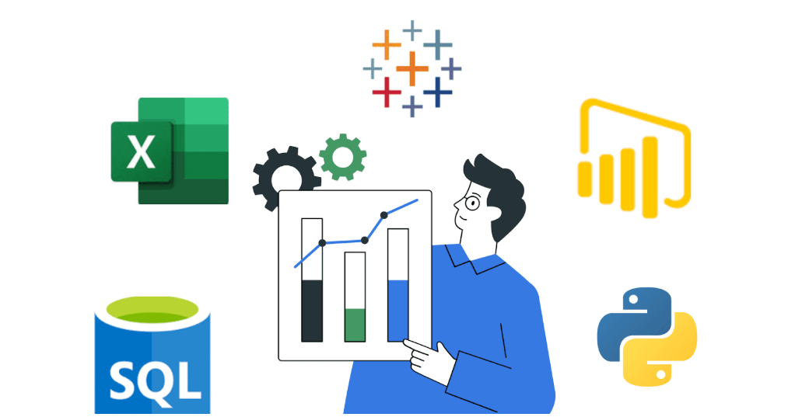
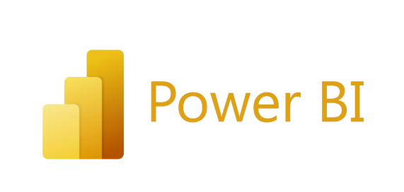
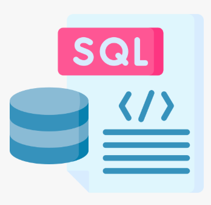
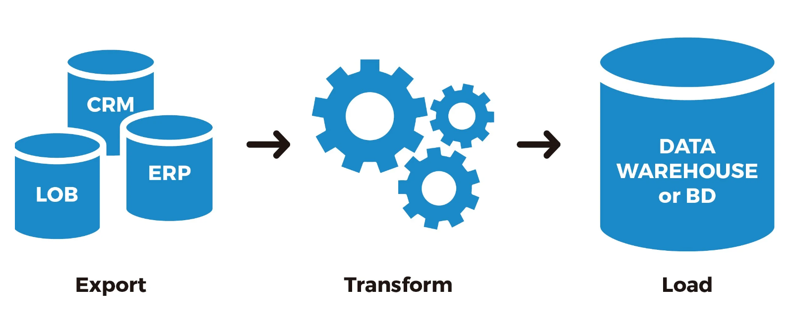

September 10, 2024
A data analyst passionate about transforming raw data into actionable insights. With a strong
foundation in statistical analysis, data visualization, and programming, expertise extends to
big data technologies like Hadoop, Spark, and NoSQL databases. Proficient in using tools such as
Python, Oracle SQL, Power BI, Docker, and Airflow to streamline data workflows and uncover
trends that lead to smarter, data-driven strategies. Focused on tackling complex challenges to
deliver impactful, scalable solutions that drive business growth and innovation.


Expertise in developing dynamic Power BI dashboards that transform complex datasets into
actionable insights. Skilled in integrating data from multiple sources, including APIs,
databases, cloud platforms, and real-time data streams, to enable seamless connectivity and
timely decision-making. Proficient in visualizing key trends, automating workflows, and
designing user-centric, interactive reports tailored to business needs. Experienced in
implementing advanced analytics, predictive modeling, and custom DAX calculations to uncover
deeper insights. Focused on delivering clarity, optimizing performance, enhancing operational
efficiency, and identifying growth opportunities through innovative data integration and
reporting solutions.

Specializes in advanced analytics and reporting using Oracle SQL and PL/SQL. Proficient in
creating efficient queries, automating processes, and developing comprehensive reports to
extract actionable insights. Expertise includes handling complex datasets, optimizing database
performance, and delivering data-driven solutions for strategic decision-making. Skilled in
designing and implementing stored procedures, triggers, and functions to streamline data
operations.

Specializes in analytics and reporting with a strong focus on ETL processes to transform and
manage data effectively. Proficient in using tools like SQL, Excel, and Power BI to create
interactive dashboards, generate insightful reports, and support data-driven decision-making.
Expertise includes leveraging Docker for containerized environments, optimizing data pipelines,
and ensuring seamless data integration from multiple sources. Adept at automating workflows,
visualizing trends, and delivering scalable solutions to enhance business performance and
operational efficiency.
Specializes in leveraging machine learning, artificial intelligence, and deep learning techniques to enable
data-driven decision-making. Expertise includes designing predictive models, implementing advanced algorithms, and
extracting actionable insights from complex datasets. Skilled in utilizing state-of-the-art frameworks and tools to
optimize processes, forecast outcomes, and uncover trends. Focused on empowering organizations with intelligent
solutions to drive innovation, enhance efficiency, and achieve strategic objectives.